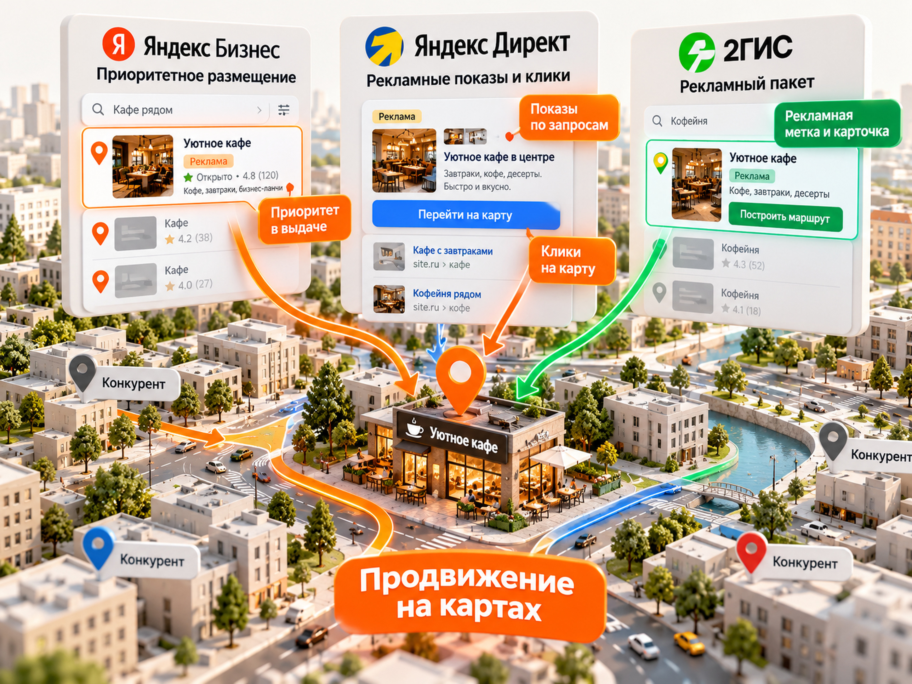

Блог о платном трафике
Геомаркетинг: как продвигать бизнес на Яндекс Картах и в 2ГИС в 2026 году
Геомаркетинг - продвижение компании с учётом местоположения потенциального клиента. Для локального бизнеса в России одна из его главных практических задач - сделать так, чтобы организацию находили и выбирали в Яндекс Картах и 2ГИС. Для этого нужно создать и заполнить карточки, поддерживать актуальные сведения, работать с отзывами, при необходимости подключать платное размещение и измерять обращения и продажи.
Короткий ответ: начните с бесплатного оформления обеих карточек, затем проверьте спрос и конкуренцию по своим услугам и районам, после чего тестируйте платное продвижение на той площадке, где можете считать результат. Рейтинг, показы и построенные маршруты полезны для диагностики, но не заменяют данные о звонках, записях и фактических покупках.
В статье разберу, что делать владельцу одной точки и сети филиалов, как работают платные инструменты Яндекс Бизнеса, Яндекс Директа и 2ГИС, сколько может стоить размещение и как рассчитать бюджет. Приведённые тарифы и кейсы относятся к российскому рынку и проверены на октябрь 2026 года. Там, где используются расчётные допущения, они прямо обозначены.
Что такое геомаркетинг и кому он нужен
В широком смысле геомаркетинг включает анализ территорий, локального спроса, конкурентов и поведения покупателей. В этой инструкции речь о прикладной задаче: привлечении покупателей в конкретную физическую точку или зону обслуживания через геосервисы.
Геомаркетинг особенно уместен для кафе, ресторанов, клиник, стоматологий, салонов красоты, барбершопов, фитнес-клубов, автосервисов, магазинов у дома, гостиниц и сервисных центров. Для B2B тоже есть сценарии: клиенту может понадобиться найти ближайший дилерский центр, склад, шоурум или пункт выдачи.
Геомаркетинг не равен обычному геотаргетингу. Геотаргетинг задаёт территорию показа рекламы, а геомаркетинг охватывает и присутствие компании на карте, и репутацию, и маршрут до точки, и измерение офлайн-результата. Он также отличается от GEO как оптимизации контента под генеративные поисковые системы: совпадение аббревиатур не означает одинаковые задачи.
Когда карты не будут главным каналом? Когда у компании нет понятной точки посещения, спрос не привязан к месту или сделка полностью дистанционная. Тогда обычная реклама в Поиске и другие каналы могут быть важнее; создавать фиктивные адреса ради охвата нельзя.
Как клиенты находят компании на Яндекс Картах и в 2ГИС
Покупатель ищет не абстрактную «хорошую компанию», а конкретную услугу поблизости: «замена масла рядом», «кофейня на улице Ленина», «стоматология открыта сегодня». Геосервис сопоставляет запрос с организациями, учитывает расположение пользователя, характеристики организаций и собственные алгоритмы ранжирования.
Видимость не сводится к одному месту в выдаче. Одна и та же компания может показываться по-разному у пользователей из соседних районов. Для бизнеса важны четыре практические вещи:
- Соответствие запросу. У компании должны быть верные рубрики, реальные услуги и понятные предложения.
- География. Расстояние до пользователя и удобство проезда влияют на выбор. Находясь далеко от клиента, нельзя рассчитывать только на красивую карточку.
- Доверие. Фотографии, отзывы, актуальные часы работы и прозрачные цены помогают принять решение.
- Рекламная заметность. Платное размещение может выделить компанию, но не отменяет необходимости хорошо оформить её профиль.
Важно: точную формулу ранжирования площадки не раскрывают. Нельзя гарантировать «первое место по всем запросам», а увеличение числа ключевых слов в описании не заменяет реальную полноту карточки.
Как правильно оформить карточку компании
Хорошая карточка должна закрывать вопросы человека до звонка: где вы находитесь, что делаете, сколько это стоит, когда работаете, как связаться и почему вам можно доверять. Оформление стоит завершить до покупки рекламы: иначе оплачиваемая видимость будет приводить пользователей к неполной информации.
Яндекс Бизнес: создание и подтверждение организации
Размещение организации в Яндекс Картах бесплатно. Если компания уже есть на карте, найдите её в Яндекс Бизнесе и запросите доступ; создавать дубль не нужно. Если её нет, добавьте компанию через Яндекс Бизнес или интерфейс Яндекс Карт, затем подтвердите права по предложенному сервисом способу. После модерации сведения появятся в Картах.
В профиле проверьте название без рекламных добавок, основную и дополнительные рубрики, адрес и точку входа, режим работы с праздничными днями, телефон, сайт, товары, услуги, цены и фотографии. Для нескольких филиалов настройте управляемую структуру сети. Назначайте доступ сотрудникам и подрядчикам через роли, а не передавайте личный логин.
2ГИС: добавление и управление компанией
Базовые справочные сведения в 2ГИС тоже публикуются бесплатно. Если организации ещё нет, представитель может отправить заявку на добавление; данные проходят проверку. При существующей карточке нужно получить возможность обновлять информацию о своей компании, а не плодить одинаковые записи.
Заполните адрес, вход, контакты, время работы, рубрики, особенности обслуживания, фотографии, товары и цены. 2ГИС позволяет размещать каталог товаров и услуг для большинства коммерческих категорий. Проверяйте карточку с телефона: пользователь чаще всего взаимодействует с ней в короткий момент выбора, а не изучает подробную презентацию бизнеса.
Услуги, цены, фотографии, отзывы и контакты
Практический чек-лист для обеих площадок:
- Указана точная рубрика и только реально оказываемые услуги. Например, автосервис не должен ограничиваться общим описанием «ремонт автомобилей», если у него есть диагностика, шиномонтаж и обслуживание конкретных узлов.
- Опубликованы цены или понятные стартовые условия, если назвать окончательную стоимость заранее невозможно.
- Есть качественные фотографии входа, вывески, интерьера, команды и результата работы. Они должны отражать действительность.
- Отмечены часы работы, способы оплаты, парковка и важные особенности: детская зона, доступность входа, запись по времени.
- Звонок, сообщение, переход на сайт и построение маршрута работают без ошибок.
- На реальные отзывы отвечают содержательно. Покупка отзывов и массовые фиктивные оценки создают риск блокировок и подрывают доверие.
Для сетей отдельно проверяйте единообразие бренда, но не копируйте один и тот же адрес, фотографии или телефон во все филиалы, если они различаются.
Бесплатное продвижение в геосервисах
Под бесплатным продвижением здесь понимается работа с органической видимостью без покупки рекламных мест. Она требует времени специалиста, но сама публикация карточки не оплачивается.
Первый приоритет - достоверные данные. Если в двух сервисах различаются часы работы, указан старый телефон или метка попала во двор соседнего здания, исправьте это до любых экспериментов с рекламой.
Второй - покрытие спроса через реальные услуги. Включите ключевые направления работы в предусмотренные поля и каталоги. Не превращайте официальное название организации в перечень запросов. Для сезонных услуг обновляйте актуальные позиции, цены, фото и расписание.
Третий - репутация. Настройте законный и ненавязчивый сбор обратной связи от настоящих клиентов: QR-код на стойке, напоминание после визита, ответ на отзыв. Особенно полезны содержательные отзывы о конкретной услуге, но диктовать покупателю формулировку не нужно.
Четвёртый - проверка выдачи. Раз в месяц смотрите несколько целевых запросов из разных районов, оценивайте конкурентные карточки, их содержание и вашу заметность. Помните, что выдача персонализируется: единичный ручной поиск не является абсолютным измерением позиции.
Показатели, которые полезно сравнивать до и после обновления: просмотры профиля, переходы в него из поиска, звонки, маршруты, посещения сайта, заявки и количество реальных клиентов. Результаты корректнее сравнивать за сопоставимые периоды и с учётом сезонности.
Платное продвижение на Яндекс Картах
Яндекс предоставляет несколько механизмов. Приоритетное размещение в Яндекс Бизнесе и продвижение организации через Яндекс Директ - не одна и та же настройка. Отдельно существует расширенный тариф присутствия в Картах, который не следует принимать за дополнительную рекламную закупку.
Рекламная подписка и приоритетное размещение в Яндекс Бизнесе
В кабинете Яндекс Бизнеса можно выбрать рекламные форматы для компании или сети. В том числе доступен «Приоритет в Картах»: более заметная метка, расширенные возможности представления компании и участие в приоритетном показе по подходящим запросам. Предлагаемые продукты и сочетания форматов нужно проверять в кабинете конкретной организации.
Общий принцип запуска: подтвердить организацию, оформить профиль, открыть раздел рекламы, выбрать филиалы, доступные форматы и период, изучить расчёт стоимости и условия оплаты. В справке Яндекса для подписки указываются варианты размещения на 90, 180 и 360 дней. Единого проверенного тарифа «для всех компаний от X рублей в месяц» нет: стоимость зависит от параметров конкретного размещения.
Это не гарантия верхней строки по любому поиску. Даже для рекламы важны релевантность, качество и содержимое карточки.
Брендированное приоритетное размещение
Если узнаваемость марки критична, Яндекс предлагает расширенные варианты приоритетного размещения, в том числе брендированные решения с заметным оформлением метки. Такой формат особенно осмыслен для сетей, автодилеров и компаний с повторными поисками по названию.
Прежде чем покупать брендирование, сравните стоимость с ожидаемым дополнительным потоком клиентов: визуальная заметность сама по себе не доказывает окупаемость.
Продвижение организации через Яндекс Директ
Яндекс Директ позволяет запускать продвижение организаций с привязкой карточки Яндекс Бизнеса. По официальной справке, варианты настройки есть в Простом старте, Мастере кампаний и Единой перфоманс-кампании. В ЕПК можно вручную выбрать показы в Яндекс Картах и/или списке организаций.
Практический порядок:
- Привяжите подтверждённую организацию, убедитесь, что в ней верные контакты.
- Выберите цель бизнеса: звонки, онлайн-записи, переходы или другие измеримые действия. Не объединяйте их механически с реальными продажами.
- Выберите тип кампании и доступные места показа. Для чистого теста Карт используйте доступные настройки показа, а не оценивайте смешанную кампанию как рекламу исключительно на карте.
- Подготовьте понятное предложение, проверьте модерацию и фактические объявления на разных устройствах.
- Настройте бюджет и стратегию с учётом объёма данных. При малом количестве конверсий не дробите кампанию на множество мелких групп и редких целей.
- Отслеживайте расходы, обращения и качество контактов, а при наличии CRM - продажи.
Внимательно проверяйте, как настроена география. Для некоторых сценариев с привязанной организацией геотаргетинг кампании не ограничивает показы на Картах так же, как обычные поисковые объявления. Поэтому фактические показы и географию клиентов нужно контролировать по отчётам, а не полагаться на одно поле настройки.
Не путайте с тарифом «Присутствие в Картах». Если он отображается в Директе из-за расширенного тарифа Яндекс Бизнеса, это отражение оплаты услуги, а не самостоятельно настраиваемая рекламная кампания с дополнительными показами.
Платное продвижение в 2ГИС
В 2ГИС реклама строится преимущественно вокруг пакетов с приоритетом в поиске и заметным оформлением карточки. На официальном рекламном сайте при выборе Москвы в октябре 2026 года опубликованы следующие стартовые цены:
| Пакет 2ГИС | Цена от | Что добавляется |
|---|---|---|
| Старт медиа | 18 000 ₽/мес. | Приоритет в поиске, логотип и объявление, кнопка действия, рекламное оформление карточки, микросайт |
| Старт медиа+ | 20 000 ₽/мес. | Возможности «Старт медиа» и «Отзывы Про» |
| Всё включено | 21 000 ₽/мес. | «Старт медиа», «Отзывы Про» и премиум-логотип на карте |
Это публичные стартовые цены на странице с выбранной Москвой, а не единые фиксированные тарифы для всех городов и категорий. Итоговые условия зависят от города, рубрики, доступного инвентаря, срока размещения и предложения менеджера. Сравнивайте коммерческое предложение с количеством филиалов и составом пакета, чтобы не считать разные услуги одной стоимостью.
Запускать платное размещение в 2ГИС стоит после проверки карточки, списка услуг и контактов. Заявка на рекламу подаётся через официальный рекламный раздел 2ГИС, после чего согласуются доступные форматы и цена. В статистике оценивайте не только рекламные показы, но и действия в карточке, звонки и дальнейшие продажи.
Самая частая ошибка - считать, что оплаченный приоритет автоматически создаст спрос. Если в районе почти никто не ищет нужную услугу, реклама не заменит этот спрос.
Яндекс Карты или 2ГИС: что выбрать
Оба сервиса нужны для полноценного присутствия, но платный бюджет можно распределять по-разному.
| Критерий | Яндекс Карты | 2ГИС |
|---|---|---|
| Бесплатная карточка | Да, через Яндекс Бизнес | Да, после проверки сведений |
| Платный приоритет | Реклама и приоритетные форматы в Яндекс Бизнесе | Приоритет в поиске в составе рекламных пакетов |
| Отдельное управление рекламой | Возможны кампании продвижения организаций через Яндекс Директ | Рекламные пакеты и согласование форматов с площадкой |
| Цена | Рассчитывается под параметры компании | Есть опубликованные стартовые пакеты для выбранного города |
| Что измерять | Показы, взаимодействия, звонки, маршруты, обращения | Показы, действия в карточке, звонки, маршруты, обращения |
| На что смотреть при выборе | Локальный спрос, качество обращений, фактический CAC | Локальный спрос, состав пакета, действия и фактический CAC |
Практическое решение: присутствуйте бесплатно на обеих площадках. Платный тест начинайте там, где видите достаточный спрос и можете сопоставить расходы с квалифицированными обращениями. Для сетей дополнительно важны единые стандарты карточек и согласованные условия размещения по филиалам.

Сколько стоит геомаркетинг в 2026 году
Расходы делятся на три разные статьи, и их нельзя смешивать:
| Статья расходов | Как формируется |
|---|---|
| Размещение карточек | В Яндекс Картах и 2ГИС бесплатное |
| Работа по оформлению и ведению | Собственное рабочее время или согласованная цена подрядчика; универсального тарифа нет |
| Платное продвижение | Коммерческое предложение площадки, тариф/пакет или расходы по рекламной кампании |
Например, рекламный пакет 2ГИС с обозначением «от 18 000 ₽/мес.» не означает, что за эту сумму агентство ещё и создаст все фотографии, обработает отзывы, настроит CRM и отчитается о фактических продажах. Услуги сопровождения считаются отдельно, если они не включены в конкретный договор.
Минимальный тестовый бюджет надо считать после проверки предложения площадки. Для Яндекс Бизнеса и части пакетов важен срок обязательств, а для Директа - доступный формат закупки, прогноз спроса и объём статистики. Если платежи вносятся сразу за несколько месяцев, в финансовом плане разделите разовый денежный отток и расчётные затраты за месяц.
Не корректно обещать единый «средний CPL геомаркетинга». Он зависит от региона, бизнеса, качества продукта и того, что компания считает лидом. Стоимость действия в карточке, звонка, квалифицированного обращения и продажи - четыре разных показателя.
Реальные результаты продвижения в геосервисах
Дилерская сеть KAMAZ: Яндекс Карты и 2ГИС, май 2026 года
В опубликованном в июле 2026 года кейсе агентства «Неткам» описан пилот для дилерской сети KAMAZ. В мае 2026 года участвовали 62 адреса в Яндекс Картах и 55 в 2ГИС. Средние показатели на одну подключённую точку за этот месяц:
| Действие | Яндекс Карты | 2ГИС |
|---|---|---|
| Показы в поиске | ≈ 5800 | ≈ 21 900 |
| Переходы в карточку | ≈ 470 | ≈ 160 |
| Построенные маршруты | ≈ 100 | ≈ 20 |
| Звонки | ≈ 27 | ≈ 38 |
| Целевые действия по определению агентства | ≈ 151 | ≈ 73 |
Эти числа взяты из разных выборок адресов. Они не означают, что 2ГИС во всех нишах даст больше звонков, а Яндекс - больше маршрутов. Публикация также приводит стоимость комплексного целевого действия для лучшей точки (16,33 ₽ в Яндексе и 11,89 ₽ в 2ГИС), но это не CPL квалифицированного лида. В таких действиях учитывались в том числе маршруты и другие взаимодействия.
Главный урок кейса - даже крупной B2B-сети имеет смысл привести геокарточки к единому стандарту и отдельно считать эффективность каждого адреса. Точные договорные бюджеты по сети не опубликованы, поэтому универсальную стоимость клиента по нему вычислить нельзя.
Клиника «Форма»: сравнение рекламной экономики, 2026 год
В кейсе Candy Digital для московской клиники опубликованы результаты за три месяца. Данные особенно полезны тем, что в них есть не только действия в карточках, но и записи, сделки, рекламный расход и выручка.
| Показатель | Яндекс Карты | 2ГИС |
|---|---|---|
| Рекламный расход | 277 000 ₽ | 228 500 ₽ |
| Лиды | 251 | 52 |
| Квалифицированные лиды | 128 | 20 |
| Записи | 94 | 13 |
| Сделки | 50 | 7 |
| Выручка | 9,1 млн ₽ | 2,52 млн ₽ |
| Расчётный CPL по всем лидам | ≈ 1104 ₽ | ≈ 4394 ₽ |
| Расчётная стоимость сделки | 5540 ₽ | ≈ 32 643 ₽ |
Стоимость сделки пересчитана как расход, делённый на число сделок. Это не чистая прибыль и не рыночный норматив. По данным публикации, суммарно все геосервисы, включая Google Maps без платного продвижения в данном кейсе, принесли 12,95 млн ₽ выручки, а рекламные расходы на Яндекс Карты и 2ГИС составили 505,5 тыс. ₽.
Важно: опубликованная выручка не равна прибыли. Без маржинальности, зарплат, прочих затрат и надёжной схемы атрибуции нельзя утверждать, что реальная рентабельность кампаний составила конкретный процент. Кроме того, это результат одного бизнеса с высоким чеком, а не прогноз для кофейни или парикмахерской.
Мой кейс продвижения в геосервисах
На сайте есть отдельный кейс продвижения в геосервисах. Он дополняет публичные агентские примеры практикой работы с конкретным проектом. При сравнении обращайте внимание на нишу, период, перечень площадок и то, что именно было посчитано результатом. Цифры кейса здесь намеренно не дублирую без сверки первичных данных, чтобы не приписывать проекту неподтверждённые показатели.
Как оценивать эффективность геомаркетинга
Для локального бизнеса воронка устроена не так просто, как «просмотр карточки = клиент». Человек может изучить фотографии, проложить маршрут и не приехать. Может позвонить дважды. Может зайти без звонка, а купить через неделю.
Разделите аналитику на четыре уровня:
| Уровень | Примеры | Как использовать |
|---|---|---|
| Видимость | Показы, появления в результатах поиска | Проверять наличие спроса и охват |
| Интерес | Просмотры карточки, переходы на сайт, маршруты | Проверять привлекательность предложения |
| Обращения | Звонки, сообщения, бронирования, записи | Считать качество и стоимость лидов |
| Бизнес-результат | Фактический визит, оплаченный заказ, повторная покупка | Считать стоимость клиента и окупаемость |
Три распространённые аналитические ловушки: один человек может совершить несколько действий; маршрут не гарантирует визит; звонок не гарантирует квалифицированное обращение. Нельзя складывать звонки, маршруты и просмотры и называть их «заявками».
Для учёта используйте статистику обеих площадок, цели сайта в Яндекс Метрике, UTM-метки там, где доступны переходы по ссылке, коллтрекинг, систему записи и CRM. Для офлайн-точки полезно спрашивать источник обращения и сопоставлять данные с реальными визитами, но ответы клиентов сами по себе неточны.
Изменения оценивайте после достаточно длительного теста, сравнивая одинаковые дни недели, сезонность, цены и акции. Если по отдельному филиалу мало обращений, собирайте статистику дольше и не делайте вывод по двум-трём событиям.
Прогноз бюджета, заявок и окупаемости
Для предварительного прогноза сначала определите, сколько допустимо платить за нового платящего клиента, а не за один просмотр карточки.
Используем формулы:
- CPL = рекламный расход / число квалифицированных обращений.
- CAC = рекламный расход / число привлечённых клиентов.
- Количество клиентов = квалифицированные обращения × конверсия в продажу.
- Допустимый CPL = допустимый CAC × конверсия обращения в продажу.
Условный пример на 30 000 ₽ в месяц
Допустим, локальный бизнес выделяет на георекламу 30 000 ₽ за месяц. Предположим, за этот расход он получил 30 квалифицированных обращений, а из них 20% завершились покупкой. Это учебная расчётная модель, а не реальный кейс, цена рынка или обещание результата.
| Параметр | Расчёт | Результат |
|---|---|---|
| Бюджет | Заданное допущение | 30 000 ₽ |
| Квалифицированные обращения | Заданное допущение | 30 |
| Стоимость обращения | 30 000 / 30 | 1000 ₽ |
| Конверсия обращения в продажу | Заданное допущение | 20% |
| Продажи | 30 × 20% | 6 |
| Стоимость клиента (CAC) | 30 000 / 6 | 5000 ₽ |
Такой результат может быть выгодным для услуги с достаточной прибылью с заказа и повторными обращениями, но убыточным для низкомаржинального товара. Например, если на одном новом покупателе бизнес получает только 3000 ₽ валовой прибыли, CAC 5000 ₽ не окупается первой покупкой. Если валовая прибыль на покупателя 8000 ₽, до учёта прочих расходов остаётся 3000 ₽. Оба значения прибыли здесь также являются отдельными условными допущениями, а не сведениями о конкретном бизнесе.
Для обратного расчёта предположим, что компания готова платить за одного клиента не более 4000 ₽, а из квалифицированных обращений покупают 20%. Тогда допустимый CPL составляет 800 ₽ (4000 × 20%). Именно с этой цифрой сравнивайте фактическую стоимость квалифицированного обращения.
Ограничения прогноза: реальные предложения Яндекс Бизнеса и 2ГИС могут требовать другого бюджета и срока размещения; часть обращений придёт бесплатно; расходы на специалиста, фотографа и систему аналитики надо учитывать отдельно. Нельзя механически переносить расчётный CPL в любой город и нишу. Когда наберётся статистика по собственной точке, замените допущения фактическими данными.
Ошибки, из-за которых геомаркетинг не окупается
| Симптом | Вероятная причина | Что проверить и сделать |
|---|---|---|
| Много просмотров, почти нет звонков | Неполная карточка или слабое предложение | Сравнить услуги, цены, фото, режим работы и конкурентов |
| Строят маршруты, но мало покупают | Трудно найти вход, нет записи, плохой сервис | Проверить метку, вход, вывеску и обработку посетителей |
| Высокая стоимость обращения | Конкуренция, неудачный пакет, низкая конверсия | Пересчитать стоимость именно квалифицированного лида и протестировать формат |
| Разные данные по филиалам | Нет единого владельца процессов | Назначить ответственных, вести регулярную проверку карточек |
| Много «лидов» в отчёте, мало продаж | В лидах смешаны клики, маршруты и звонки | Развести события по этапам, подключить CRM и учёт визитов |
| Карточка видна по названию, но не по услугам | Неполные рубрики и каталог | Обновить реальные категории, услуги и атрибуты |
Не стоит обещать бизнесу определённое место в локальном поиске или использовать массовые искусственные отзывы как способ продвижения. И то и другое подменяет измеримый результат имитацией работы.
Пошаговый план запуска геомаркетинга на 30 дней
Дни 1-5. Аудит. Найдите все карточки и дубли, проверьте доступы, адреса, входы, часы работы, отзывы и основные запросы. Зафиксируйте исходные показатели по каждому филиалу отдельно.
Дни 6-12. Оформление. Подтвердите права, обновите рубрики, каталог товаров и услуг, фотографии, контакты и особенности. Настройте порядок обработки звонков и онлайн-записей.
Дни 13-17. Аналитика. Определите, что для вас является квалифицированным обращением и покупкой. Настройте доступные отчёты, Метрику и CRM, проверьте звонки и тестовые заявки. Постройте финансовый порог допустимого CAC.
Дни 18-23. Реклама. Сравните спрос и условия площадок, получите реальные предложения по приоритетному размещению, выберите подходящие инструменты и запустите тест. Не оформляйте платную подписку только ради красивой метки, не проверив экономику.
Дни 24-30. Первичная оценка. Проверьте корректность размещения, расходы, качество обращений, слабые филиалы и процесс продаж. Исправьте явные ошибки. Не объявляйте кампанию успешной или проваленной по недостаточной статистике; для строгого вывода могут потребоваться последующие месяцы.
Что считать успехом
Геомаркетинг работает, если компания получает дополнительных клиентов по приемлемой стоимости и может хотя бы приблизительно связать результат с источником. Самая полезная система для локального бизнеса - актуальная карточка, понятное предложение, удобный путь клиента до покупки и регулярная проверка фактической экономики. Приоритет на карте имеет смысл только тогда, когда он помогает этой системе приносить продажи.
Автор: Максим Мирошников, специалист по платному трафику и Яндекс Директу.